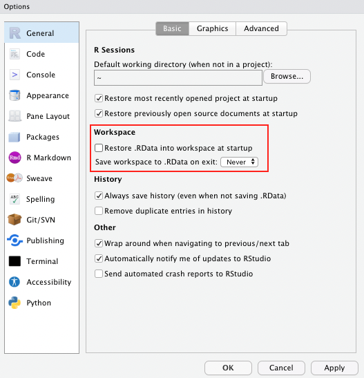
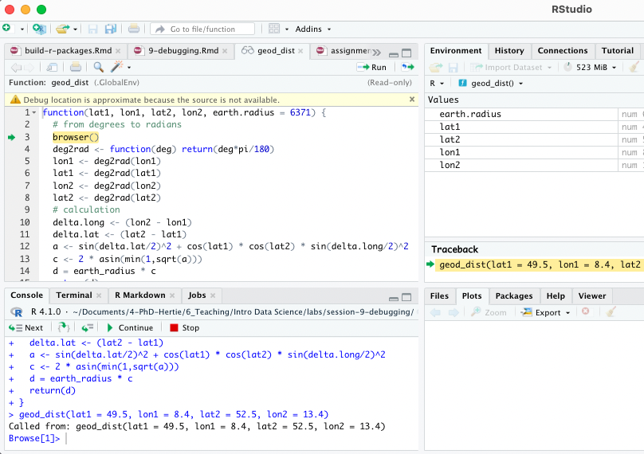

Functional Programming
Functions, iteration and debugging in R
This week, we will teach you one of the most important parts of coding with R (and I cannot stress enough how important it is). Built-in functions and packages can only get you so far, there will be times when it is both easier and more efficient to create your own. Writing your own functions is a key skill in any coding language really, and R is no different. Unfortunately, writing your own function also requires you to be able to find and fix bugs that will inevitably creep into your code. For all of these reasons, this lab will teach you how to:
- write your own functions
- iterate functions over multiple inputs
- vectorise your functions using the
purrrpackage - debug your code
Quick review: lists 📃
One of the more important objects in R for functional programming are lists. Since we only briefly touched upon them in Week 1, let’s go over them again in more detail.
Vectors can only hold a single data type.
By comparison lists can hold many different data types at the same time.
When you think about, data.frames are also lists (or rather a list of columns).
You don’t believe me?
## $country
## [1] Afghanistan Afghanistan Afghanistan Afghanistan Afghanistan Afghanistan
## 142 Levels: Afghanistan Albania Algeria Angola Argentina Australia ... Zimbabwe
##
## $continent
## [1] Asia Asia Asia Asia Asia Asia
## Levels: Africa Americas Asia Europe Oceania
##
## $year
## [1] 1952 1957 1962 1967 1972 1977
##
## $lifeExp
## [1] 28.801 30.332 31.997 34.020 36.088 38.438
##
## $pop
## [1] 8425333 9240934 10267083 11537966 13079460 14880372
##
## $gdpPercap
## [1] 779.4453 820.8530 853.1007 836.1971 739.9811 786.1134Lists will be very common (and useful) once you get into the writing
of your functions and iterating them using the purrr family
of functions.
Functions 🏭
In any coding language a fundamental principle should be DRY (Don’t Repeat Yourself). You should adhere to this as much as possible, but really, once you have copy-pasted code twice, it is time to write a function.
Functions allow you to automate tasks in a more powerful and general way than copy-and-pasting. Writing a function has three big advantages over using copy-and-paste:
You can give a function an evocative name that makes your code easier to understand.
As requirements change, you only need to update code in one place, instead of in many.
You eliminate the chance of making incidental mistakes when you copy and paste (i.e. updating a variable name in one place, but not in another).
You can read more on functions in this section of R for Data Science.
Basic Syntax
What does code look like that calls for writing a function? Something along these lines:
df <- data.frame(
a = rnorm(100, 5, 2),
b = rnorm(100, 100, 15),
c = rnorm(100, 2, 1),
d = rnorm(100, 36, 7)
)
df$a <- (df$a - mean(df$a, na.rm = TRUE)) / sd(df$a, na.rm = TRUE)
df$b <- (df$b - mean(df$b, na.rm = TRUE)) / sd(df$a, na.rm = TRUE) # spot the mistake?
df$c <- (df$c - mean(df$c, na.rm = TRUE)) / sd(df$c, na.rm = TRUE)
df$d <- (df$d - mean(df$d, na.rm = TRUE)) / sd(df$d, na.rm = TRUE)There are three key steps to creating a new function:
Pick a name for the function. For us it could be
zscalebecause this function re-scales (or “z-transforms”) a vector to have a mean of 0 and a standard deviation of 1.You list the inputs, or arguments, to the function inside the brackets. Here we have just one argument. If we had more, the call would look like this:
function(x, y, z).You place the code you have developed in the body of the function. The body of the function is represented by a
{}block that immediately follows thefunction(...)call.
The overall structure of a function looks like this:
function_name <- function(input_parameters) {
Do what you want to do in the body of the
function, just like you would write other code in R.
}In our example, we could simplify the z-transformation of four variables with this function:
A word on function names. Generally, function names should be verbs, and arguments should be nouns. There are some exceptions: nouns are ok if the function computes a very well known noun (i.e. mean), or accessing some property of an object (i.e. coefficients). A good sign that a noun might be a better choice is if you’re using a very broad verb like “get”, “compute”, “calculate”, or “determine”. Where possible, avoid overriding existing functions and variables. This might be a little tricky sometimes, as many good names are already taken by other packages. Nevertheless, avoiding the most common names from base R will avoid confusion.
Let’s look at another example and work with a fictional experimental study dataset “study.csv” that was generated for this course.
## Rows: 68
## Columns: 8
## $ age <dbl> 32, 30, 32, 29, 24, 38, 25, 24, 48, 29, 22, 29, 24, 28, 24, …
## $ age_group <chr> "30 and Older", "30 and Older", "30 and Older", "Younger tha…
## $ gender <chr> "Male", "Female", "Female", "Male", "Female", "Female", "Fem…
## $ ht_in <dbl> 70, 63, 62, 67, 67, 58, 64, 69, 65, 68, 63, 68, 69, 66, 67, …
## $ wt_lbs <dbl> 216, 106, 145, 195, 143, 125, 138, 140, 158, 167, 145, 297, …
## $ bmi <dbl> 30.99, 18.78, 26.52, 30.54, 22.39, 26.12, 23.69, 20.67, 26.2…
## $ bmi_3cat <chr> "Obese", "Normal", "Overweight", "Obese", "Normal", "Overwei…
## $ emotions <chr> "sad", "netural", "netural", "netural", "happy", "sad", "net…Exercise 1:
Can you write a function to calculate the mode for the relevant variables in the data?
Exercise 2:
What is the mode for the variable bmi_3cat?
Conditional functions 🔀
In practice you will often encounter a situation in which you would like to apply a function if a certain conditions are met. Luckily, including conditions in your custom functions is fairly straightforward. Here is what the syntax for such a conditional functions would look like.
if (this) {
# do that
} else if (that) {
# do something else
} else if (that) {
# do something else
} else {
# do something else
}The conditions in the normal brackets are specified using the logical
operators of R (!=, ==, <,
>, etc.) or a function that returns a logical value. In
many ways these conditions follow the same approach we applied to
filter() during last week’s lab. The {}
denominate the body of the function, just as with unconditional
functions.
You could, for example, only transform numeric variables and code the function to warn you if you tried to scale a character variable.
zscale <- function(x){
if (is.numeric(x)) {
(x - mean(x, na.rm = T) / sd(x, na.rm = T))
} else {
return("Not a numeric input!")
}
}
zscale(df$a)## [1] -0.25168491 0.56618044 -1.31733955 -0.38104765 0.22663128 -1.01554854
## [7] -1.06053277 -0.26106740 -0.26879313 -1.23342181 -1.30844319 0.76193729
## [13] 0.85161163 -0.61999965 0.03157276 -0.75981136 1.13056126 0.68538172
## [19] -0.73971786 -0.30796816 0.36417248 -0.74870344 -0.68267357 -0.84667046
## [25] -1.36229556 -1.91831540 -0.12087653 -1.69161183 2.67086596 -1.01296226
## [31] -1.51245870 0.60951829 -0.27521944 -1.00955842 0.68230439 0.25400737
## [37] 0.11236469 0.06743762 -0.03914300 1.40778024 -0.32991341 -0.43536255
## [43] 1.82098761 2.38474755 -0.81249686 -0.44122793 -1.52797189 0.83957384
## [49] 0.18539461 1.82474112 -2.10664920 -0.73053256 -0.16791971 0.87027227
## [55] -0.83855191 0.02106143 1.16507551 0.68077474 -1.40396972 -0.25170034
## [61] -1.06106321 -1.13978939 -0.32910776 1.10293767 0.07008336 0.49343694
## [67] 0.62540978 0.41254885 -1.32675592 1.74641460 -1.38035596 0.86395141
## [73] 0.58740914 1.40315832 0.03043250 0.86418157 -0.85585225 0.49182058
## [79] 0.79878721 -0.82321202 1.04871962 0.54860908 0.58004053 1.07346169
## [85] -0.57526842 -1.27042382 -0.39612987 1.08492133 -0.69489779 -0.32528954
## [91] 1.20563012 0.19648016 0.91687767 0.76740420 -0.14389780 1.03278256
## [97] -1.41390572 1.52436311 1.52432803 0.31896392Now we can apply our function to any variable that we would like to transform. It will run even if we apply it to a character input, but warn us that the input does not fit the required input.
df$a <- zscale(df$a)
df$b <- zscale(df$b)
df$c <- zscale(df$c)
df$d <- zscale(df$d)
# you can also use your function with a pipe!
df$d |> zscale()Note that there is still a lot of repetition in the example above. We can get rid of this repetition using what coders call iteration 👇.
Exercise 3:
You feel that the variable on emotions in our study dataset is badly represented and you decide to replace it with Emoticons! You want to write a function to automate this task. Transform this pseudo code into an R function:
# hint: you'll want to replace "netural" with "neutral"
# write a function that takes a character element as input
# if happy, then :)
# if sad, then :(
# if neutral, then :|Iteration ⚙️
Iteration helps you when you need to do the same thing to multiple inputs: repeating the same operation on different columns or on different datasets.
On the one hand, you have for loops and
while loops, which are a great place to start because they
make iteration very explicit. On the other hand, functional programming
(FP) offers tools to extract out duplicated code, so each common
for loop pattern gets its own function.
Remember the code above - it violates the rule of thumb that you should not copy-paste code more than twice.
# repetitive code
df$a <- zscale(df$a)
df$b <- zscale(df$b)
df$c <- zscale(df$c)
df$d <- zscale(df$d)For-loops
To solve problems like this one with a for loop, we need
to think again about the following three components:
Output: we already have the output — it’s the same as the input because we are modifying data. If that is not the case, make sure to define a space where the output should go (e.g. an empty vector). If the length of your vector is unknown, you might be tempted to solve this problem by progressively growing the vector. However, this is not very efficient because in each iteration, R has to copy all the data from the previous iterations. In technical terms you get “quadratic” (O(n^2)) behaviour which means that a loop with three times as many elements would take nine (3^2) times as long to run. A better solution to save the results in a list, and then combine into a single vector after the loop is done. See more on this here.
Sequence: we can think about a data frame as a list of columns, so we can iterate over each column with
seq_along(df).Body: apply
zscale()or any other function.
The better solution will look like this:
# repetitive code
df$a <- zscale(df$a)
df$b <- zscale(df$b)
df$c <- zscale(df$c)
df$d <- zscale(df$d)
# equivalent iteration
for (i in seq_along(df)) { # seq_along() similar to length()
df[[i]] <- zscale(df[[i]]) # [[]] because we are working on single elements
}Remember, this only works for for loops that manipulate
existing inputs (ie. columns in a dataframe). If you want to save the
output of your function in a different way, you need to define the
object where you wish to store the output ahead of the
function.
output_median <- vector("double", ncol(df))
for (i in seq_along(df)) {
output_median[[i]] <- median(df[[i]])
}
output_median## [1] -0.009040784 -1.651375203 -0.160216296 -0.114820050While-loops
You should also be aware that there is a conditional version of for-loops called while loops. Their uses are a little more niche and as such will not be covered in this lab. For those among you who are curious about them, you can find a pretty good tutorial here.
The purrr package 🐱
For-loops are not as important in R as they are in other languages because R is a functional programming language. This means that it’s possible to wrap up for-loops in a function, and call that function instead of using the for-loop directly. 💡
Basic syntax 🖊
The purrr package provides functions that eliminate the
need for many common for loops. The apply family of functions in base R
(apply(), lapply(), tapply(),
etc.) solve a similar problem, but purrr is more consistent and thus is
easier to learn. The most useful function will be
map(.x, .f), where:
.x: is a vector, list, or data frame.f: is a function- output: is a list
Logic behind vectorised functions (also called functional programming).
Three ways to pass functions to map():
- pass directly to
map()
- use an anonymous function
\(x)
- use
~
Let’s look at this in practice. Imagine you want to calculate the mean of each column in your data frame:
The map*() family of functions 👪
The pattern of looping over a vector, doing something to each element and saving the results is so common that the purrr package provides a family of functions to do it for you. Indeed, their use is so common that several wrapper functions were created to include the final transformation of the list output. There is one function for each type of output:
map()returns a list.map_lgl()returns a logical vectormap_int()returns an integer vector.map_dbl()returns a double vector.map_chr()returns a character vector.
Exercise 4:
Go back to the example above, since all of the means are numeric, it makes more sense to store them in a vector rather than a list. Which function should I use?
Map2 ‼️
You can also iterate over two inputs at the same time using
map2(.x, .y, .f)

Logic behind map2().
The function works exactly the same way as the map*
functions for a single input. One caveat that applies only to
map2() is that both inputs need to have the same
length!
Exercise 5:
Write a function that returns both the mean and the standard deviation for the numeric variables in our study data.
Exercise 6:
Iterate over the relevant columns.
Exercise 7:
Use map and the tolower function to
harmonise character values in the study dataframe.
Non standard evaluation (optional)
There is, of course, much more to learn about functions in R and for those of you who want to take it further, you can find more information here. For now, consider this as is the first exposure to functions (that can actually already get you pretty far). However, it is important that you apply 🤓 your new skills and practice further on your own.
One such skill is the question of how to integrate tidyverse functions into your own functions. Most dplyr verbs use tidy evaluation in some way. Tidy evaluation is a special type of non-standard evaluation (meaning the way R interprets your written code) used throughout the tidyverse. There are two basic forms found in dplyr:
- data masking makes it so that you can use data
variables as if they were variables in the environment (i.e. you write
my_variableinstead ofdf$myvariable). - tidy selection allows you to switch choosing
variables based on their position, name, or type
(e.g.
starts_with("x")oris.numeric).
Data masking and tidy selection make interactive data exploration fast and fluid, but they add some new challenges when you attempt to use them indirectly such as in a for loop or a function. This vignette shows you how to overcome those challenges.
Debugging 🐞
When you write code, things will inevitably go wrong at some point. You can professionalize the way of how to
- fix unanticipated problems (debugging)
- let functions communicate problems and take actions based on those communications (condition handling)
- learn how to avoid common problems before they occur (defensive programming)
Potential problems are communicated via “conditions” (e.g., errors, warnings, and messages). For example
- fatal errors are raised by
stop()and force all execution to terminate - warnings are generated by
warning()and display potential problems - messages are generated by
message()and can provide informative output on the way
Debugging workflow
- realize that you have a bug
- make the bug repeatable: start with big chunk of code and narrow it down to isolate it
- figure out where it is
- fix it and test it
Debugging tools 🔦
In the lecture, we saw the following function that calculates the geodesic distance between two points specified by radian latitude/longitude using the Haversine formula (hf); taken from here, as an example. We’ve inserted some bugs here… 🐛
geod_dist <- function(lat1, lon1, lat2, lon2, earth.radius = 6371) {
# from degrees to radians
deg2rad <- function(deg) return(deg*pi/180)
lon1 <- deg2rad(lon1)
lat1 <- deg2rad(lat1)
lon2 <- deg2rad(long2)
lat2 <- deg2rad(lat2)
# calculation
delta.long <- (lon2 - lon1)
delta.lat <- (lat2 - lat1)
a <- sin(delta.lat/2)^2 + cos(lat1) * cos(lat2) * sing(delta.long/2)^2
c <- 2 * asin(min(1,sqrt(a)))
d = earth_radius * c
return(d)
}
geod_dist(lat1 = 49.5, lon1 = 8.4, lat2 = 52.5, lon2 = 13.4)Trial and error 🎓
That is, if you see the error right away, try and fix it. You have lots of experience doing that. 🤓
Making function global 🌏
You basically turn the arguments of the function into global objects (objects you can see in your environment, otherwise the objects are only available within your function). Then you can step through the code line by line to locate the bug.
# make the objects that are otherwise entered as input parameters to your function global
lat1 = 49.5; lon1 = 8.4; lat2 = 52.5; lon2 = 13.4# now, execute line by line
deg2rad <- function(deg) return(deg*pi/180)
lon1 <- deg2rad(lon1)
lat1 <- deg2rad(lat1)
lon2 <- deg2rad(long2)
lat2 <- deg2rad(lat2)
delta.long <- (lon2 - lon1)
delta.lat <- (lat2 - lat1)
a <- sin(delta.lat/2)^2 + cos(lat1) * cos(lat2) * sing(delta.long/2)^2
c <- 2 * asin(min(1,sqrt(a)))
d = earth_radius * c
return(d)Problem: This creates global objects that match
arguments names, which can become confusing and cause problems that
become obvious when the function is called in a different environment.
⚠️ In case you choose this option, it is a good idea to clean your
environment afterwards, or simply to remove all the new global objects
using rm().
Side note If you haven’t done so already, as a general best practice advise, change the settings in your global options to “never” save the workspace as this can cause similar issues to the example described above.

Using traceback() 👈
This shows you where the error occurred (but not why). Read from bottom to top (e.g. 1. called function X, 2. called function Y, error occurred in line #6 of function Y)
Using browser() 🦊
Basically, add browser() into your function somewhere
before you expect the error. Note: While
browser() works best within a clean .R script, it can also
help with troubleshooting within .Rmd files.
geod_dist <- function(lat1, lon1, lat2, lon2, earth.radius = 6371) {
# from degrees to radians
browser()
deg2rad <- function(deg) return(deg*pi/180)
lon1 <- deg2rad(lon1)
lat1 <- deg2rad(lat1)
lon2 <- deg2rad(lon2)
lat2 <- deg2rad(lat2)
# calculation
delta.long <- (lon2 - lon1)
delta.lat <- (lat2 - lat1)
a <- sin(delta.lat/2)^2 + cos(lat1) * cos(lat2) * sin(delta.long/2)^2
c <- 2 * asin(min(1,sqrt(a)))
d = earth_radius * c
return(d)
}
geod_dist(lat1 = 49.5, lon1 = 8.4, lat2 = 52.5, lon2 = 13.4)You can then interactively work through the function line by line by hitting enter in the console or send additional lines of code.

Note: Other helpful tools for debugging R functions
written by someone else include debug() which automatically
opens a debugger at the start of a function call and
trace() which allows temporary code modifications inside
functions that you can’t easily access to
(e.g. ggplot()).
Condition handling 🐜🐜🐝🐜
Sometimes errors come expected, and you want to handle them automatically, e.g.:
- model fails to converge
- file download fails
- stack processing of lists
Useful functions to deal with such cases: try() and
tryCatch()
Using try() 🤷
Ignore error:
## Error in log(x) : non-numeric argument to mathematical function## [1] 10Suppress error message:
## [1] 10Pass block of code to try():
## Error in a + b : non-numeric argument to binary operatorCapture the output of try():
## Error in "a" + "b" : non-numeric argument to binary operator## [1] "numeric"## [1] "try-error"Use possibly(), a function similar to try()
from the purrr package when applying a function to multiple elements in
a list. You can also provide a default value (here: NA) in
case execution fails.
Condition handling with tryCatch() 🎣
React to conditions, such as errors, warnings, messages, or interruptions, with certain actions “handlers”. These are functions that map conditions to condition handler functions that can do anything but typically will return a value or create a more informative error message:
show_condition <- function(code) {
tryCatch(code,
error = function(c) "error",
warning = function(c) "warning",
message = function(c) "message" )
}
show_condition(stop("!"))## [1] "error"## [1] "warning"## [1] "message"If no condition is captured, tryCatch() returns the
value of the input:
## [1] 15A more real-life example of how to use tryCatch() is
this one:
model_selection <- function(data, formula1, formula2){
tryCatch(lm(formula1, data), error = function(e) lm(formula2, data))
}You try to fit formula1 to the data, however, maybe it
is a model with very strict requirements. You might also have a more
robust (but maybe less interesting) formula2 that you might
fit if the requirements are not met and the modeling process throws an
error.
Make more informative error messages:
Defensive programming 🛡
- “making code fail in a well-defined manner”
- “fail fast”: as soon as something wrong is discovered, signal an error
- Three rules to implement the “fail fast” principle:
- be strict about what you accept (e.g., only scalars)
- avoid functions that use non-standard evaluation, such as
subset(),transform(), orwith() - avoid functions that return different types of output depending on
their input (e.g.
sapply)
Debugging Exercise 💀
Here is a piece of code that comes with a few flaws. As an optional take-home exercise, please identify the bugs, remove them and report what you have done using comments.
# load packages
library(tidyverse)
library(LegislatoR)
# get political data on German legislators
political_df <-
left_join(x = filter(get_political(legislature = "ger"), as.numeric("session") == 18),
y = get_core(legislature = "ger"), by = "pageid")
# wiki traffic data
traffic_df <-
get_traffic(legislature = "ger") |>
filter(date >= "2013-10-22" & date <= "2017-10-24") |>
group_by(pageid) |>
summarize(traffic_mean = mean(traffic, na.rm = TRUE),
traffic_max = max(traffic, na.rm = TRUE))
# sessions served
sessions_served_df <-
get_political(legislature = "deu") %%
group_by(pageid) |>
dplyr::summarize(sessions_served = n())
# merge
legislator_df <-
left_join(political_df, sessions_served_df, by = "pageid") |>
left_join(traffic_df, by = "pageid")
# compute age
get_age <- function(birth, date_at) {
date_at_fmt <- date_at
birth_fmt <- birth
diff <- difftime(lubridate::ymd(birth_fmt), lubridate::ymd(date_at_fmt))
diff_years <- time_length(diff, "years")
diff_years
}
legislator_df$age_in_years <- round(get_age(legislator_df$birth, "2017-10-24"), 0)
# plot top 10 pageviews
legislator_df <- arrange(legislator_df, desc(traffic_mean))
legislator_df$rank <- 1:nrow(legislator_df)
legislator_df_table <- dplyr::select(rank, name, traffic_mean, traffic_max)
names(legislator_df_table) <- c("Rank", "Representative", "Mean", "Maximum")
legislator_df_table <- head(legislator_df_table, 10)
ggplot(legislator_df_table, aes(y = Mean, x = -Rank)) +
xlab("Rank") + ylab("Avg. daily page views") +
labs(title = "Top 10 representatives by average daily page views") +
geom_bar(stats = "identity") + # change to geom_col
scale_x_continuous(breaks = -nrow(legislator_df_table):-1, labels = rev(1:nrow(legislator_df_table))) # add +
geom_text(aes(y = 10, label = Representative), hjust = 0, color = "white", size = 2) +
coord_flip() +
theme_minimal()
# run model of page views as a function of sessions served, party, sex, and age in years
legislator_df$traffic_log <- log(legislator_df$traffic_mean)
covars <- c("sessions_served", "party", "sex", "age_in_years")
fmla <- paste("traffic_log", paste(covars, collapse = " - "), sep = " ~ ")
summary(log_traffic_model <- lm(fmla, legislator_df))
# plot table
sjPlot::tab_model(log_traffic_model)Actually learning R 🎒
Let us remind you again, the key to learning R is:
Google! We can only give you an overview over basic
R functions, but to really learn R you will
have to actively use it yourself, trouble shoot, ask questions, and
google! It is very likely that someone else has had the exact same or
just similar enough issue before and that the R community has
answered it with 5+ different solutions years ago. 😉
Sources
The section on functions and iteration is partly based on R for Data Science, section 5.2, Quantitative Politics with R, chapter 3; as well as the Tidyverse Session and on the excellent slides by Malcolm Barrett in the course Data Science for Economists by Grant McDermott. The data for the exercises was inspired by R for Epidemiology.
A work by Lisa Oswald & Tom Arend
Prepared for Intro to Data Science, taught by Simon Munzert